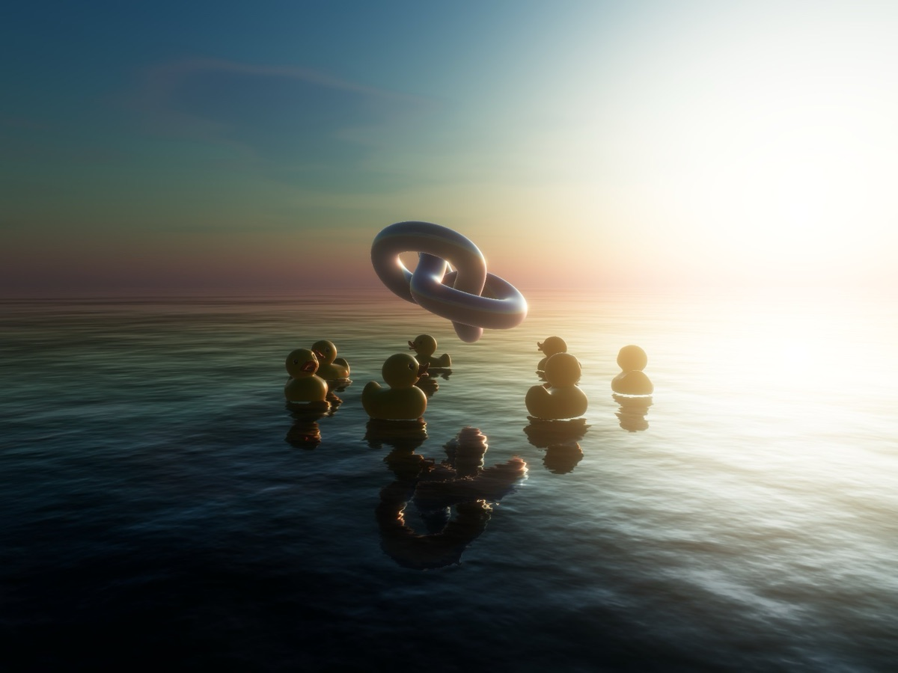
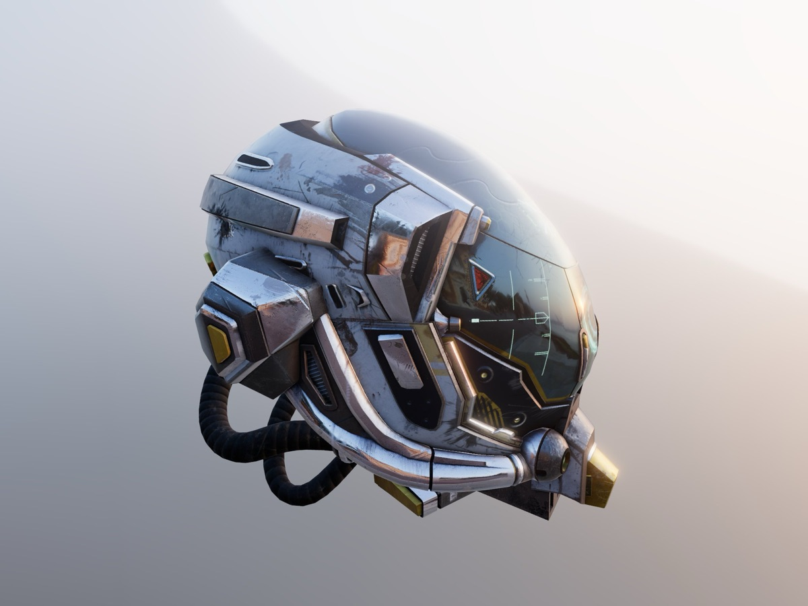
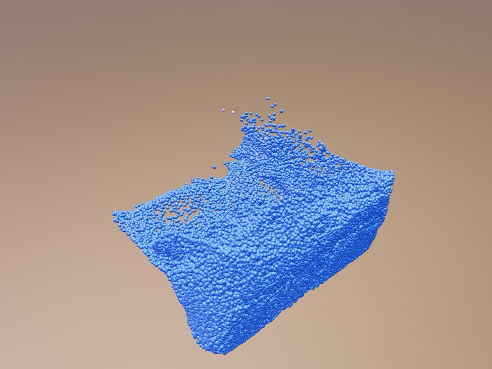
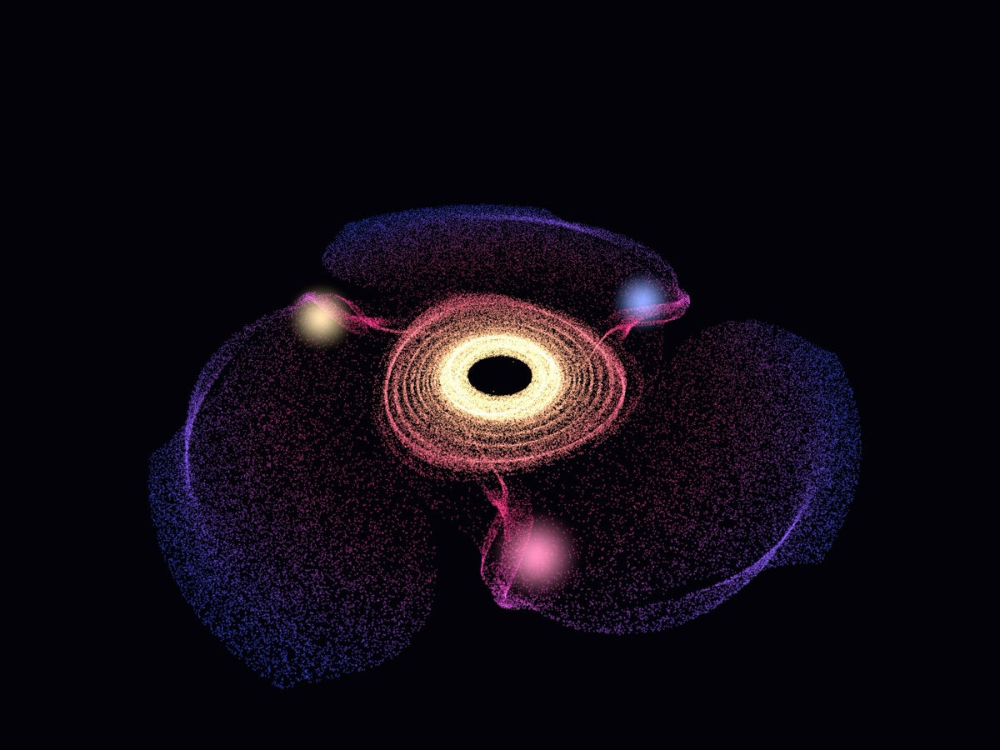

Golden hour
Rubber ducks bob on the open sea as the sun goes down. Move the sun and watch every reflection follow it.
Works in any modern browserFour small worlds you can play with: a sunset at sea, a polished helmet, a tank of sloshing water and a galaxy you can blow apart. No installs and no plugins. Open one, then drag to look around.

Rubber ducks bob on the open sea as the sun goes down. Move the sun and watch every reflection follow it.
Works in any modern browser
A battle-worn sci-fi helmet under a Venetian sunset. Turn it in your hands and make the visor glow.
Works in any modern browser
65,000 drops of simulated water slosh around a rocking tank. Swipe through it to make waves.
Needs Chrome or Edge (WebGPU)
131,000 stars swirl into spiral arms. Hold a button to blow the galaxy apart and watch it pull itself back together.
Works in any modern browserDrag with a mouse or one finger to look around, and scroll or pinch to zoom. A recent Chrome or Edge on a laptop or desktop gives the smoothest result. Phones work for most demos, though big scenes can take a few seconds to load.
Every demo runs on three.mbt, a faithful port of three.js to MoonBit. The demos themselves are written in MoonBit too, and the port is checked against three.js down to its shaders and pixels. The pixel comparison pages render the same scenes with both and compare every pixel.